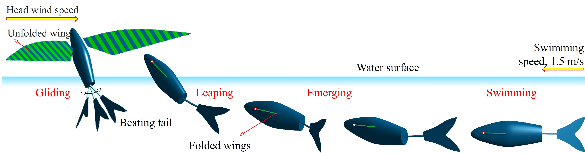

Projects
Project 1 (2023): KUFish enables to swim fast underwater and glide in the air after reaching the leaping speed of 1.45 m/s. (Link)
The videos are about the beat-glide kinematics of the caudal fin after leaping out of water with the body tilting angles of 30 & 60 degrees.

Project 2 (2024): Comparative study of the flapping-wing stability of KUBeetle flying on Earth and Mars. (Link)
The videos demonstrate the system responses of KUBeetle under a disturbed left-to-right, lateral airspeed (its magnitude is about 7% of mean flapping speed) in the air conditions on Earth (left) and Mars (right).